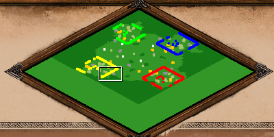

Scenario Basics
Written by: Alian713
Custom Scenarios allow you to define your own, custom game modes. Literally, they are different "scenarios" the game can be played in.
The Scenario Editor¶
The Scenario Editor is the tool that every map maker uses to make and test scenarios. To open a new scenario in the editor,
- Click
Single Playerin the main menu - Click
Editors - Click
Create Scenario
To open a saved scenario in the editor,
- Double-click the scenario from the list in the editors menu in step 3 above
To open an externally downloaded scenario in the editor,
- Click
Open Scenario Folderin the editors menu in step 3 above - Put the downloaded scenario in this folder
- To see the newly added scenario in the editors menu, go back to the main menu and open the editors menu again.
When you load into a new scenario, it is a blank canvas for you to play with!
In the editor, there are quite a few tabs that you can see at the top, their functionalities are discussed below:
1. Map¶
Under the Map tab in the editor, there are several options to change the map, they are discussed below:
1.1. Map Style¶
-
Blank Map: This option generates a map of the same terrain throughout the map. The default map that is generated when a new scenario is loaded is a blank map with grass terrain. -
Random Map: This option generates a map from an RMS. (RMS stands for Random Map Script, they are scripts that generate regular maps like Arabia) -
Seed Map: This option generates a map from an RMS using a specified seed.
Question
What is a seed you ask?
Each generation of a particular RMS in the game has a number attached to it called its "seed" that uniquely identifies that particular generation of the RMS. Generating a map with the same RMS and seed twice will give you the exact same map!
1.2. AI Map Type¶
This option is used by AIs to figure out what kind of a map they are playing on. This is important if you have AIs in your map because you want them to go for water builds when you have water on your map. Lets say that the map is nomad themed, then setting the AI Map Type to Nomad would allow AI players to properly play in a nomad style.
1.3. Colour Mood¶
This setting changes the colour theme (lighting) of the map. By default it is set to Empty which means no colour theme. Colour themes are used for aesthetic reasons only and do not effect gameplay. For exmaple, if you are making a map set in the winter season, then using the winter colour theme could be an option.
1.4. Team Positions¶
This setting is for when you generate maps from an RMS. It determines if players in the same team are placed in order of their colour or if they are randomly distributed throughout the map
For example, The teams are currently set to Players 1,3,5,7 vs Players 2,4,6,8 and generating the map with team positions on gives this result:

Notice that players 1,3,5,7 who are on the same team have, generated in that particular order (going counter clockwise in the image) and that players 2,4,6,8 have also generated in that order.
Generating the map with team positions off on the other hand, gives this result:

Notice that now, players 1,3,5,7 who are on the same team, have generated in random positions. Similarly players 2,4,6,8 have generated in no particular order. Also note that even though the positions within the team are random, the players are still grouped on each side of the map by team.
To be more precise, this option generates players in each team in order of their player numbers. Players do not have to be in the specific teams used in the above exmaple for this to work.
1.5. Extend Map¶
This features is useful for expanding an already existing map if you need to use more space. To use it,
- Click the checkbox called
Extend Map. - This brings up two new options,
New Map Sizeand aMap Offset. New Map Size: the size of the new map that will be generated.Map Offset: determines where to place the existing map on the new map.
For example, Extending this 4 player map with a New Map Size of 8 players and a Map Offset of North

gives the following result:

Remember, the top corner of the map is North!

1.6. Script Filename¶
This is the place where you need to enter the name of any XS scripts that you are using in your map. XS scripts are covered in the XS Scripts section of this guide
2. Global Victory¶
Under the Global Victory tab in the editor, there are options that allow you to define custom victory conditions for all players. They are all discussed below:
2.1. Standard¶
A player wins by either defeating all enemies, or capturing 5 relics and holding them for 200 years, or constructing and holding a wonder for 200 years
2.2. Conquest¶
A player can only win by defeating all enemy players
2.3. Score¶
The first player to reach the specified score wins
2.4. Time Limit¶
The game is played until the specified time limit. When the time limit is reached, the player with the highest score wins
2.5. Custom¶
This victory condition can be customised using the following options:
Conquestthis is the same as the victory condition in point 2. aboveExplorationthe first player to reach the specified percentage of the map explored wins the game. (There is a text box infront of this option to specify percentage)Relicsthe first player to capture the specified quantity of relics wins the game. Unlike Standard Victory, a playar wins as soon as they have gathered the relics and do not need to hold them for 200 years. (There is a text box infront of this option to specify quantity)Any Onea player can complete any one of the victory condition enabled above to winAlla player has to complete all of the victory conditions enabled above to win
3. Terrain¶
Under the Terrain tab in the editor, there are a lot of options to modify the terrain of the map. Each of them are discussed below:
3.1. Map¶
This option allows you to manually place down terrain on the map.
Brush Size: allows you to pick how large of an area you want to affect on the map at onceLayering Mode: allows you to blend and layer another type of terrain on top of the base terrain. Note that the terrain properties like buildings that can be placed on terrain are still determined by the base terrain. This means that you won't be able to build buildings on ice layered with grass but you will be able to build buildings on grass layered with iceEye Candy: determines if the terrain you place automatically spawns eye candy on top of it. Eye candy are plants and other units that are generated for aesthetic reasons only, hence the name "eye candy"No Waves on Shore: disables waves on water throughout the mapWater Definitions: this option changes what water looks like throughout the map
Different water definitions are shown below:
Preset_Main:

Preset_FE1:

Preset_FE2:

Preset_WickedWitch:

Beach Type: this option changes the type of beach terrain that is placed down when water terrain is placed. Exploring the different beach types has been left as an excersise for the reader.
3.2. Elevation¶
This option allows you to change the elevation of existing tiles on the map.
Brush Size: allows you to pick how large of an area you want to affect on the map at once
Tip
In the editor, there are 7 different levels of elevation to chose from, but the elevation can actually have higher or lower values. In the editor, there is no way to make water have elevation either, but it is actually possible to give water elevation as well. Both of these things requires use of external map editing tools and are covered under the AoE2ScenarioParser section of this guide.
3.3. Cliffs¶
This option allows you to place cliffs on your map. There are two types of cliffs to chose from, Granite and Sandstone. They function exactly the same, and differ only in their appearence.
Tip
A cliff is actually a gaia object that can be rotated, if you go to the Units tab, and enable the Rotate option, you will be able to click the cliff and rotate it (right click rotates it in the opposite direction). There are a few rotations of the cliff objects that actually do not have graphics for them and hence appear invisible. but since they are still present on the map, just not visible, they block units from going through them. This mechanic can be used to make invisible walls on the map!
3.4. Map Copy¶
This option allows you to copy a part of the map and paste it using a brush. There are options to rotate and flip the selected area as well.
Bug
When a selection that is rectangular is rotated, the highlighted area that shows the brush DOES NOT rotate accordingly to show this rotation, but the game still pastes a rotated as you would expect.
There is also another option called Change Player. This option allows you to change the player of the units in the selection to another player when pasting the selection.
3.5. Erase¶
This option allows you to selectively remove parts of the map in an area using a brush. The objects that can be selectively removed when using this feature are:
- Buildings
- Gaia Objects
- Invisible Units
- Layered Terrain
- Trees
- Units
Abstract
The layering mode option in this tab seems to have no effect on the way that elements are erased.
4. Options¶
Under the Options tab in the editor, there are options to:
4.1. Point of View¶
Set the specified player's starting PoV to your current view in the editor using the set view button. Once the view is set, check that it works by clicking go to view
4.2. Testing Difficulty¶
Set the Testing Difficulty
4.3. Full Tech Tree¶
Enable Full Tech Tree for all players.
Warning
This option does not disable civ bonuses unlike the full tech tree option in normal games!
4.4. Disable Objects¶
Disable Buildings, Units or Techs by moving them from the Full List to the Disabled List by clicking the < arrow. remove an object from the disabled list by clicking >. The << and >> move all items at once
Note: Using this option to disable objects is not recommended as there is a better way to do it via triggers which are covered in the Triggers section of this guide.
4.5. Collide & Correcting¶
Enabling this option makes stationary units move out the way to let moving units pass through.
4.6. Villager Force Drop¶
Makes villagers instantly lose their resources when their tasks are switched instead of losing when they actually start working on the other task. This mimics FE behaviour, i.e. if villagers are switched from hunters to sheep, they don't lose any food.
4.7. Block Humanity Team Change¶
Lock Teams ONLY for human players.
5. Players¶
Under the Players tab in the editor, there are several properties that can be changed about the players
5.1. Number of Players¶
The total number of players you have in your scenario
5.2. Starting Age¶
Specify the starting age for the currently selected player
5.3. Colour¶
Specify the colour of the currently selected player
5.4. Starting Resources¶
Food, Wood, Stone, Gold determine the starting amount of the currently selected player's resources
5.5. Pop Limit¶
Determine the maximum population limit allowed for the currently selected player. This value is capped at 500
5.6. Base Priority¶
This option seems to have no effect on the game.
Question
If you are aware of what this does, please reach out to one of the authors of this guide and let them know!
5.7. Tribe Name¶
Sets the name for the currently selected player if they are an AI. Does not effect human players
5.8. Name String ID¶
This field is used for refering to names that the game recognises by default. It can be used to automatically set a Tribe name by using a value that the game recognises. Trying out the value 1 in this field on an AI and seeing what happens is left as an excersise for the reader.
5.9. Personality¶
The AI to use for this player if they are not a human player. Pick E3-p2.ai to simulate an afk player
5.10. Player Type¶
This setting doesn't make a difference to gameplay. The only difference between the two options is that setting this to Either wont auto fill lobby slots with AIs. Setting it to AI will automatically set that player up for you in a lobby game
5.11. Civilization¶
Set the currently selected player's civilization
5.12. Lock Civ¶
Prevent the currently selected player from changing their civilization in a lobby
5.13. Architecture¶
Change the currently selected player's architecture set to another civilization's.
5.14. Swap Players¶
Swap the settings for the currently selected player with the specified player.
6. Messages¶
Under the Messages tab, there are different options for displaying text in the scenario.
6.1. Scenario Instructions¶
This option lets you set the text that is shown in the Instructions tab of the Objectives Panel.
Note
The Objective Panel can be opened by clicking the button to the right of the Tech Tree button at the top of the screen.
6.2. Objectives¶
This option lets you set the text that is shown in the Objectives tab of the Objectives Panel.
6.3. Hints¶
This option lets you set the text that is shown in the Hints tab of the Objectives Panel.
6.4. Scout¶
This option lets you set the text that is shown in the Scout tab of the Objectives Panel.
6.5. Victory¶
This option lets you set the text that is shown to players who win the game before the statistics screen.
6.6. Defeat¶
This option lets you set the text that is shown to players who lose the game before the statistics screen.
7. Units¶
Under the Units tab, there are several options to place and manipulate units.
7.1. Placing Units¶
Units can be placed on the map from the 4 menus in this tab:
The game categorises all unit objects in the game into 4 categories, Units, Buildings, Heroes, Others.
Unitsallows you to place down units that are most commonly seen in regular games.Buildingsallows you to place down most of the different buildings in the game.Heroesallows you to place down the hero units used in campaigns and scenarios.Othersthese are miscellanious units that do not directly come under any of the above categories.
By default, units are placed in a random rotation, however scrolling up/down before placing a unit allows you to fix its rotation to whichever rotation you want. To go back to placing in a random rotation, select another unit in the menu and then re select the unit for placement.
While placing these units, changing the player to Gaia will reveal additional hidden units like trees, mines, wolves and other units that only Gaia can own in normal games. There are additional units in the game that cannot be seen in the editor's lists even when using Gaia to place them.
There are two ways to use these hidden units:
- Use a create object trigger with the hidden unit's object ID
- Use the Advanced Genie Editor (A.G.E.) to unhide hidden units in the editor to allow for manual placement.
If you do not know how to do either of those, you can refer to the Effects section of this guide for the first option, and/or refer to the Unhide Editor Units section of this guide
7.2. Deleting Units¶
Units that are already placed on the map can be deleted from the map by the following ways:
- The first and the most obvious option is to use the
Deleteoption in this tab. This allows us to delete units one by one from the map. - The first option can be tedious if you need to delete a large amount of units, thus the second option is to use the
Erase Unitsoption in theErasemenu under theTerraintab. Refer to 3.5. Erase about how to use theEraseoption.
7.3. Moving Units¶
Units already placed on the map can be moved around on the map by using the Move option in this tab.
7.4. Rotating Units¶
Units already placed on the map can be rotated by using the Rotate option in this tab. After the Rotate option is selected, clicking a unit will rotate it clockwise, and right clicking it will rotate it counter clockwise.
7.5. Selecting Units¶
When selecting a unit, its statistics like HP, Attack, Armour and units garrisoned inside it are shown. Units inside other units can be deleted using the garrison delete.
7.6. Converting Units¶
This option allows you to convert existing units from one or more players to another player.
When enabled, 9 new options (to the right) appear in the menu for selecting which players' units you want to convert from. The currently selected player (on the left) is the player the units will be converted to. After picking a Brush Size when you click on an area, all of the units belonging to the players being converted from will be converted to the selected player.
Remember the players being converted from are selected on the right side using the checkboxes, and the player being converted to is the one selected in the dropdown to the left!
8. Cinematics¶
Under the Cinematics tab, there are options to change the movie clips displayed before or after a scenario.
Bug
These are mainly used in the campaigns, and functionality for changing them in scenarios is bugged as of the time of the writing of this guide.
9. Diplomacy¶
Under the Diplomacy tab, there are options to change the diplomacy settings of the game:
9.1. Diplomacy Stance¶
The grid of checkboxes to the right allows you to change each player's stance with all of the other players.
9.2. Lock Teams¶
This option makes it so that teams cannot be changed by players in the game. They can still be changed by triggers.
9.3. Players Choose Teams¶
Disabling this option will not allow players to pick teams in the lobby before the start of the game. The teams will not be locked however, and may still be changed in game unless the Lock Teams option is also enabled.
9.4. Random Start Points¶
This option seems to have no effect on the game.
Question
If you are aware of what this does, please reach out to one of the authors of this guide and let them know!
10. Triggers¶
Under the Triggers tab, triggers can be manipulated in a scenario. Triggers are the most powerful component of a scenario as they allow us to do a plethora of different things in a game. They can be used to add more dynamics and game mechanics to a scenario, almost anything that you could think of (within the context of AoE2 and its own limits) is possible to do in some way using triggers.
Details about how to use triggers are covered in the Triggers section of this guide.
11. Useful Hotkeys¶
Some hotkeys that are useful to know and make the workflow of making and testing a scenario faster
- Scrolling up and down on a dropdown list makes the values go up and down the lists as well
- Pressing or holding a letter in any object selection menu will cycle through the list of objects
- If you are on a tab where a player can be selected (except triggers) then pressing numbers 1-8 will switch to that player
- When testing a scenario, pressing Ctrl+Shift and
F#where # is the number of a player, will let you control that player. For example, pressing Ctrl+Shift+F4 will shift your control to player 4 - Scrolling when placing objects will rotate them. Some gaia buildings and units have entirely different graphics for different rotations!
- Pressing Ctrl+G once allows for off grid placement of units. Pressing it again allows for stacking units and off grid placement together. Pressing a 3rd time allows for on grid unit placement with stacking enabled. Pressing a 4th time makes it go back to default! Even Buildings can be stacked using this option!
- Ctrl+Q Quit the scenario editor
- Ctrl+A Toggle hitboxes on every unit on the map
- Ctrl+S Save the scenario
- Ctrl+L Load a scenario
- Ctrl+N Create a new scenario
- Tabs
- F1-F10 selects a tab in the scenario editor. F1 - Map, F2 - Terrain, and so on
- Ctrl+W Switch to the Messages tab
- Ctrl+R Switch to the Triggers tab
- Ctrl+T Switch to the Terrain tab
- Ctrl+U Switch to the Units tab
- Ctrl+O Switch to the Options tab
- Ctrl+P Switch to the Players tab
- Ctrl+D Switch to the Diplomacy tab
- Ctrl+C Switch to the Cinematics tab
- Ctrl+V Switch to the Global Victory tab
- Ctrl+M Switch to the Map tab
- Ctrl+Space Test Scenario (Currently bugged, causes a crash in the game D:)